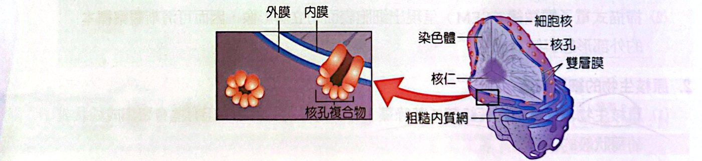
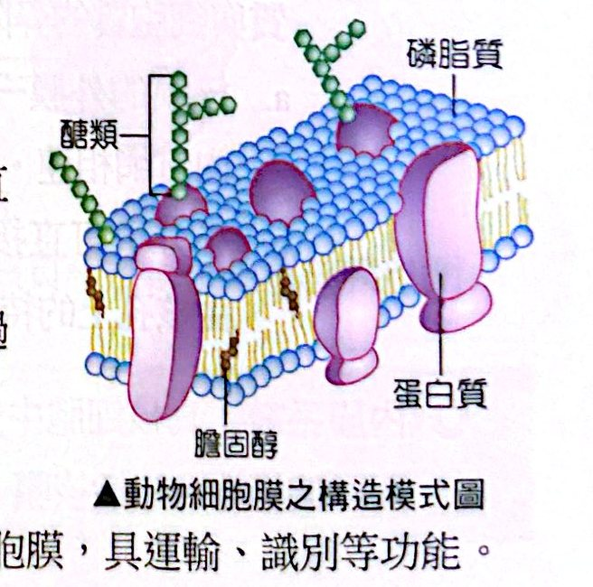
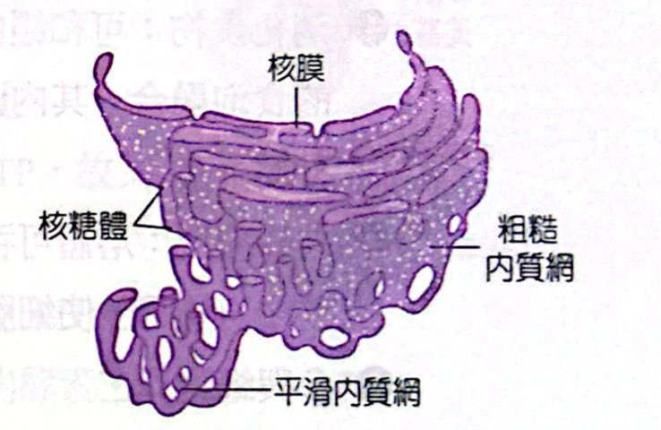
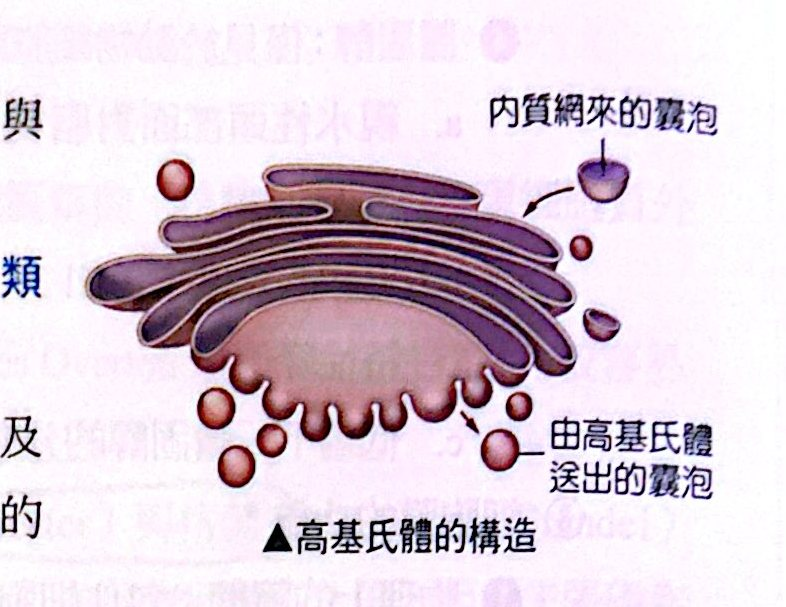
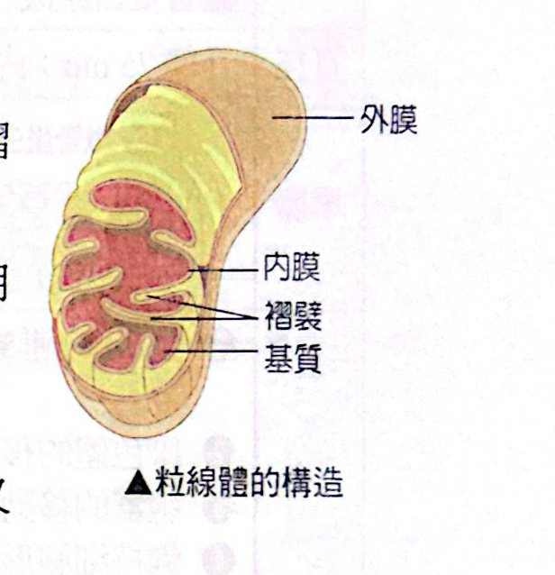
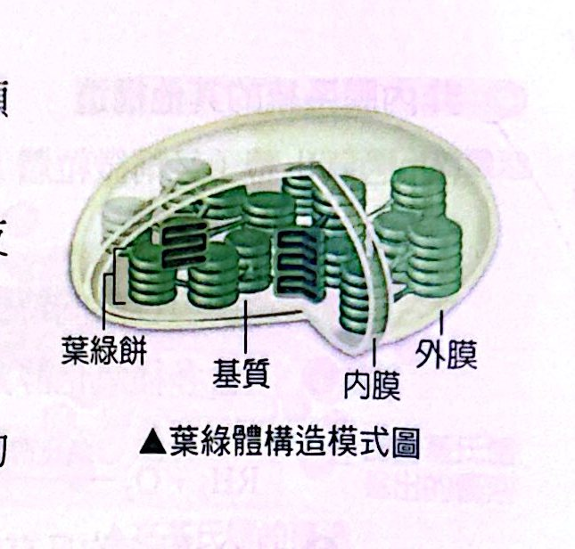

細胞有多大？
| 尺度 |
m |
mm |
10～100 μm |
1～10 μm |
10～100 nm |
0.1～10 nm |
| 對象 |
人 |
水螅 |
動物細胞、植物細胞 |
細菌 |
病毒、胞器 |
分子、原子 |
- 一般細胞約 10 μm，白血球直徑約 8～12 μm；
- 最長的細胞：神經細胞（細胞體與白血球差不多大，但神經纖維可長達 1 m）；
- 最小的細胞：細菌（1～2 μm）；最大的細胞：鴕鳥的卵。
- 單位換算：1 m ＝ 10² cm ＝ 10³ mm ＝ 10⁶ μm ＝ 10⁹ nm。
原核細胞 vs 真核細胞
原核生物＝細菌與藍綠菌（藍綠藻），都是單細胞生物，有些會聚集成絲狀或葡萄狀。
|
原核細胞 |
真核細胞 |
| 細胞核 |
沒有真正的細胞核，遺傳物質裸露在細胞質中（染色體） |
有細胞核（核膜包圍） |
| 胞器 |
無膜狀胞器（只有核糖體） |
有膜狀胞器 |
| 細胞壁 |
有，主要由肽聚糖組成 |
植物＝纖維素；真菌＝幾丁質；動物沒有 |
| 大小 |
較小（1～10 μm） |
較大（10～100 μm） |
| 例子 |
細菌、藍綠菌 |
動物、植物、真菌、原生生物 |
原核細胞的基本構造：細胞壁（保護）、細胞膜（控制物質進出）、細胞質（膠狀水溶液、生化反應主要場所，含水、無機鹽、核糖體與其他有機分子）和染色體。
真核細胞的構造總覽
細胞核是控制細胞活動的中心（內含遺傳物質）。典型細胞間期的細胞核含有線狀的染色體、核質、核仁，外有核膜包圍。
| 構造 |
重點 |
| 染色體 |
間期時遺傳物質的線狀形態，由雙股螺旋 DNA＋蛋白質組成；分裂時更濃縮成棒狀 |
| 核質 |
填充在核膜與核仁之間的濃稠膠態物質 |
| 核仁 |
一至數個，間期細胞核內最顯著的構造，是形成核糖體次單元的中心（核糖體蛋白質經核孔送入核仁，與 rRNA 組成）；同種細胞核仁數目相同 |
| 核膜 |
雙層膜（相距 10～50 nm），核質與細胞質的界限；外膜有核糖體附著，並與粗糙內質網相連；小分子直接通過核孔，大分子需耗能、靠核孔蛋白轉運 |

細胞核與核膜上的核孔
細胞膜
生物膜構造模型的發展（年代配對常考）：
| 年代 |
科學家 |
發現／主張 |
| 19 世紀初 |
光學顯微鏡觀察 |
細胞質外有一層模糊的邊界線 |
| 1899 |
歐弗頓（Overton） |
脂溶性物質較容易進入細胞 ⇒ 細胞膜以脂質為主 |
| 1925 |
高特與格蘭多（Gorter & Grendel） |
萃取紅血球膜脂質，平鋪面積約為紅血球表面積的 2 倍 ⇒ 磷脂呈雙層排列 |
| 1935 |
道森與達尼利（Davson & Danielli） |
表面張力低 ⇒ 提出「蛋白質—脂質—蛋白質」三明治模型 |
| 1959 |
羅伯森（Robertson） |
電子顯微鏡看到暗、明、暗三層結構，厚約 7.5 nm |
| 1966 |
布蘭頓（Branton） |
冷凍蝕刻技術打開雙層磷脂，提出蛋白質鑲嵌在磷脂中的假說 |
| 1970 |
佛萊與艾丁（Frye & Edidin） |
人鼠細胞融合實驗，提出細胞膜的流體模型 |
| 1972 |
辛格與尼可森（Singer & Nicolson） |
提出流體鑲嵌模型 |
流體鑲嵌模型：細胞膜主要由雙層磷脂構成的流體膜，膜上鑲嵌有可在磷脂層中滑動的蛋白質。
| 成分 |
重點 |
| 雙層磷脂（脂雙層） |
脂溶性分子、夠小的不帶電分子可直接擴散通過；大分子、帶電荷離子無法直接通過 |
| 鑲嵌蛋白 |
埋在脂雙層，多數穿過整個膜，具運輸、識別功能 |
| 周邊蛋白 |
在膜的表面，有催化化學反應等功能 |
| 醣類 |
附著於磷脂或蛋白質，位於膜外側，使細胞識別同種細胞、辨別自身或外來細胞 |
| 膽固醇 |
僅見於動物細胞膜，穩定膜結構；溫和溫度（如 37°C）限制磷脂流動、降低流動性；低溫時干擾磷脂緊密排列，降低凝固溫度 |

動物細胞膜的構造模式圖（流體鑲嵌模型）
細胞膜的功能：①物理上的障壁（包住內容物）；②新陳代謝上的障礙（選擇性通透膜，調節進出）；③感應性（識別或接受外界變化）；④構造上的支持者。
內膜系統的各胞器
| 胞器 |
構造 |
功能／重點 |
| 粗糙內質網（RER） |
有核糖體附著、扁囊狀；一端連核膜 |
合成要分泌出去的蛋白質、膜蛋白與內膜系統的蛋白質；製造膜所需磷脂 |
| 平滑內質網（SER） |
無核糖體、細長管狀 |
因細胞而異：性腺與腎上腺皮質合成固醇類激素；肝臟解毒（酒精、藥物）與醣類代謝；肌肉細胞儲存釋放鈣離子 |
| 高基氏體 |
扁平盤狀、邊緣膨大，可與小泡結合 |
多種細胞產物的儲存、修飾、分類、運輸；分泌功能強的細胞（如腺細胞）較發達 |
| 溶體 |
由高基氏體凸出形成的囊狀構造，內含多種酸性水解酶 |
細胞的分解胞器：消化食物（與食泡融合）、自噬作用（分解陳舊胞器）、參與細胞凋亡 |
| 液泡 |
細胞內被膜包圍的囊狀構造 |
食泡（來自吞噬，與溶體融合）；伸縮泡（淡水原生動物排除多餘水分）；中央液泡（成熟植物細胞，儲存無機鹽、醣類、有機酸、花青素，積水產生膨壓維持形狀） |

內質網：粗糙內質網（附核糖體）與平滑內質網

高基氏體的構造
非內膜系統的其他構造
| 構造 |
重點 |
| 過氧化體（微粒體） |
單層膜；內含氧化酵素，使反應物（RH₂）氧化產生 H₂O₂（有毒），再由觸酶（過氧化氫酶）把 H₂O₂ 還原成水；只存在特定細胞（肝細胞的過氧化體有代謝含氮廢物的酶）；由脂質和蛋白質合併而成，大到一定程度分裂為二 |
| 粒線體 |
雙層膜：外膜平滑，內膜向內摺疊成嵴（增加表面積）；基質呈膠態。行呼吸作用產生 ATP（細胞能量工廠）：嵴上有電子傳遞鏈與 ATP 合成酶；基質有檸檬酸循環酵素。半自主性胞器：有自己的 DNA（mtDNA）、RNA 與核糖體，母系遺傳；能自行複製 |
| 葉綠體 |
主要在葉肉細胞（一個細胞約 20～40 個）；雙層膜；內部有類囊體，疊成葉綠餅。類囊體膜含光合色素（葉綠素、葉黃素、類胡蘿蔔素），進行光反應；基質（葉綠餅與內膜間）進行固碳反應。半自主性胞器，有自己的 DNA，與藍綠菌有許多相同特徵 |
| 細胞骨架 |
蛋白質纖維構成的網狀構造：微管、微絲、中間絲（見下表） |
| 核糖體 |
非膜狀構造，電子顯微鏡才看得到；由大、小兩個次單元（rRNA＋蛋白質）組成，附著於 mRNA 才有功能；合成蛋白質的場所。附著在內質網、核膜上，或游離於細胞質，粒線體與葉綠體內也有 |
| 中心粒 |
在細胞核附近，細胞分裂時複製；一般動物細胞才有（開花植物沒有）；每個呈中空狀、兩個互相垂直；與細胞分裂、鞭毛或纖毛形成有關（中心體＝中心粒＋周圍濃稠細胞質） |
| 植物細胞壁 |
細胞的分泌物：主要成分纖維素＋少量蛋白質＋其他多醣；中膠層（果膠質，把相鄰細胞黏在一起）、初生細胞壁（薄、有彈性、使細胞可增長）、次生細胞壁（細胞成熟停止生長後形成，較厚堅韌，纖維素垂直交叉排列，再以木質素結合）；功能：保護、維持形狀、對抗重力、防止吸水過多 |

粒線體的構造

葉綠體構造模式圖
細胞骨架三兄弟：
| 性質 |
微管 |
微絲 |
中間絲 |
| 構造 |
中空，管壁由 13 條柱狀微管蛋白組成 |
兩條絞合的肌動蛋白鏈 |
纖維蛋白質絞結組成一條粗索 |
| 直徑 |
外徑 25 nm；內徑 15 nm |
7 nm |
8～12 nm |
| 功能 |
細胞運動（如纖毛）、染色體移動、胞器移動、維持形狀 |
肌肉收縮、細胞質流動、細胞運動（偽足）、細胞分裂時分割溝形成、維持與改變形狀 |
構造支持、維持細胞形狀 |
經典演練
經典演練 1離心分離細胞構造・題組 1（不含磷脂）
用果汁機將菠菜葉打碎後，用紗布過濾並將濾液倒入離心管，以適當的轉速離心，其離心沉澱物以電子顯微鏡觀察，可見細胞壁的碎片及膜上具小孔的球狀結構（甲）。此後，分三次逐步提高離心機的轉速，得到的沉澱物再分別用電子顯微鏡觀察。第一次的沉澱物若用肉眼就可觀察到呈綠色（乙），第二次的沉澱物呈現雙層膜短棒狀的構造（丙），第三次的沉澱物為附在膜上的緻密顆粒（丁）。
上述細胞構造（甲～丁）中，不含磷脂的細胞構造為何？
(A) 甲 (B) 乙 (C) 丙 (D) 丁
看答案與詳解收起
答(D)
解先辨認：甲＝細胞核（球狀、膜上有核孔）、乙＝葉綠體（綠色）、丙＝粒線體（雙層膜短棒狀）、丁＝核糖體（膜上的緻密顆粒）。磷脂是膜的成分，核糖體沒有膜，所以不含磷脂。
上述細胞構造（甲～丁），若以碘液測試，何者可能會有深藍色的反應？
(A) 甲 (B) 乙 (C) 丙 (D) 丁
看答案與詳解收起
答(B)
解碘液遇澱粉呈深藍色。光合作用的產物（葡萄糖）可在葉綠體內暫存成澱粉粒，所以葉綠體（乙）可能呈深藍色。
甲～丁這四種沉澱物中，哪些是酵母菌有，而細菌沒有的構造？
看答案與詳解收起
答甲（細胞核）、丙（粒線體）
解酵母菌是真菌（真核生物），有細胞核（甲）、粒線體（丙），但沒有葉綠體（乙）；核糖體（丁）則是原核與真核共有，所以不是「細菌沒有」的。
請寫出甲～丁四種沉澱物的細胞構造名稱，並依比重小至大的順序排列。
看答案與詳解收起
答甲＝細胞核、乙＝葉綠體、丙＝粒線體、丁＝核糖體；比重小→大：丁（核糖體）＜ 丙（粒線體）＜ 乙（葉綠體）＜ 甲（細胞核）
解差速離心：愈重、愈大的先沉澱（低速就沉下），愈輕愈小的要更高速才沉下。沉澱的先後順序是甲（連同細胞壁碎片）→乙→丙→丁，所以比重由大到小＝甲＞乙＞丙＞丁。
圖㈠表示某哺乳動物胰臟細胞內各種蛋白質的合成和轉運過程，圖中①～⑦代表細胞結構，A～E 代表物質。圖㈡是胰臟細胞合成 D 物質過程中高基氏體、細胞膜、內質網膜面積的變化圖。（依圖判讀——①：游離核糖體；②③：粗糙內質網；④：高基氏體與囊泡；⑤：粒線體；⑥：細胞核；⑦：細胞膜。A、B、C 為游離核糖體合成的蛋白質，分別留在細胞質、送進細胞核、送進粒線體；D 為分泌蛋白；E 為細胞外的訊號分子。）
圖㈠中，A、B、C、D 代表細胞內合成的各種蛋白質。下列哪些屬於 B 類物質？（多選）
(A) 胰蛋白酶 (B) 胰島素 (C) DNA 聚合酶 (D) 抗體 (E) RNA 聚合酶
看答案與詳解收起
答(C)(E)
解由游離核糖體合成、再送進細胞核的蛋白質，是 DNA 聚合酶、RNA 聚合酶（C、E）。胰蛋白酶、胰島素、抗體都是分泌蛋白，由粗糙內質網上的核糖體合成，走內質網→高基氏體→細胞膜，屬於 D 類。
當胰臟細胞正在大量合成 D 物質時，其胞內哪些構造明顯比不進行合成時發達？（多選）
(A) 核糖體 (B) 高基氏體 (C) 粒線體 (D) 平滑內質網 (E) 粗糙內質網
看答案與詳解收起
答(A)(B)(C)(E)
解分泌蛋白＝核糖體合成→粗糙內質網加工→高基氏體修飾分類→囊泡運輸；整個過程需要 ATP，所以粒線體也要增多。平滑內質網與蛋白質合成無直接關係。
D 物質從合成到運輸至細胞外的過程中一共穿越幾層磷脂？
看答案與詳解收起
答0 層
解全程靠囊泡運送，囊泡膜與細胞膜融合，以胞吐方式把內容物排出，蛋白質沒有直接穿過任何一層磷脂雙層。
依據膜面積的變化分析，圖㈡中 c 屬於圖㈠中的何種構造？（請寫出代號及中文名稱）
看答案與詳解收起
答⑦ 細胞膜
解分泌蛋白的囊泡由內質網出芽（內質網膜面積減少）、被高基氏體接收再送出（高基氏體膜面積幾乎不變：收進來又送出去），最後囊泡與細胞膜融合（細胞膜面積增加）。圖㈡中「後」比「前」增加的 c 是細胞膜（⑦）。